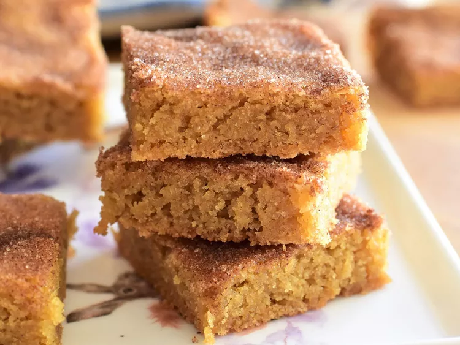

Snickerdoodle Bars!

Description
Delicious treats that are simpler to make than their cookie counterparts
Ingredients
- 1/2 cup unsalted butter, softened
- 1/2 cup white sugar
- 1/4 cup firmly packed brown sugar
- 1 large egg, at room temp
- 2 tsps vanilla extract
- 1 1/4 cups all-purpose flower
- 1/2 tsp cream of tartar
- 1/2 teaspoon baking soda
- 1/2 teaspoon salt
- 1/4 teaspoon ground cinnamon, divided
- 1/8 tsp ground nutmeg
- 1 tbsp white sugar
- 1/2 tsp ground cinnamon
Steps
- Preheat the oven to 350 degrees F (175 degrees C). Line an 8x8-inch
square pan with enough parchment paper to have overhang on all sides.
- Cream together butter, 1/2 cup white sugar, and brown sugar in a
bowl with an electric mixer until light and fluffy. Mix in egg
and vanilla until thoroughly combined. Add in flour, cream of
tartar, baking soda, salt, 1/4 teaspoon cinnamon, and nutmeg, and
mix until a dough just begins to form.
- Place dough into prepared pan. Using lightly floured hands, press
dough firmly and evenly into the bottom of the pan.
- In a small bowl, mix together 1 tnsp white sugar and 1/2 tsp
cinnamon. Sprinkle evenly over the dough.
- Place pan into the preheated over, and bake just until the dough
in the center of the pan feels barely set, 20 to 23 minutes.
Do not over bake.
- Allow cookies to cool in pan for 10 minutes before removing to a
wire rack to cool completely. Cut into 16 bars.